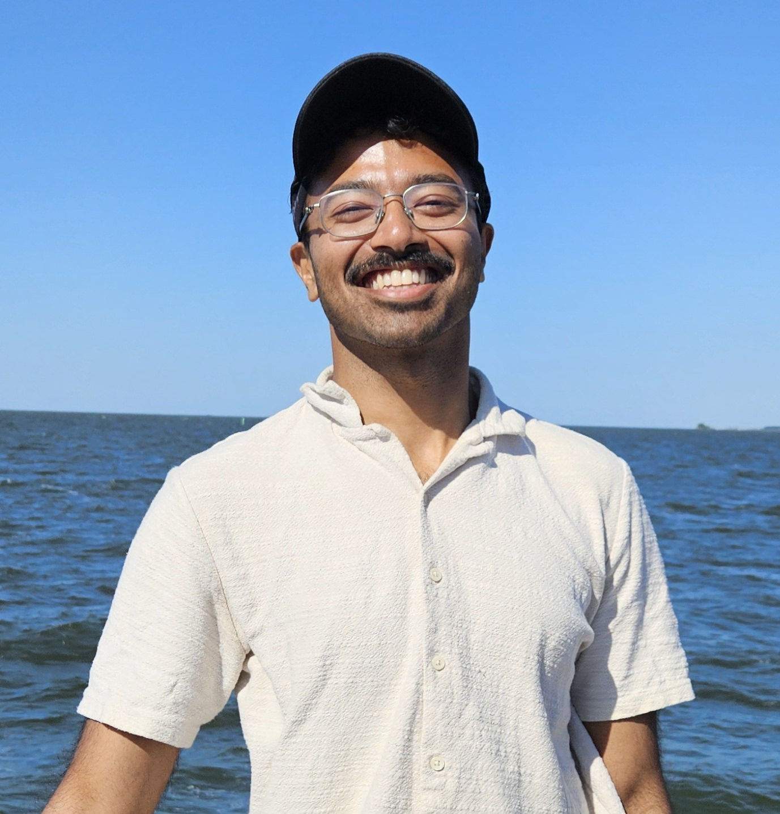

People
We are actively recruiting postdoctoral researchers, doctoral students, and Bachelors' and Masters' students. We welcome motivated and talented applicants with backgrounds in statistical physics, biophysics or theoretical chemistry, particularly with experience or interest in coarse-grained theories and computer simulations of complex systems. Please see the Contact page to get in touch.

Avishek Das
Assistant Professor in Condensed Matter Physics · Durham University
- Postdoc, Biochemical Networks group, AMOLF, 2022-2026
- Ph.D., University of California Berkeley, 2017-2022
- B.Sc.(Research), Indian Institute of Science Bangalore, 2013-2017
During postdoctoral research, Avishek explored how chemotactic bacteria can optimally act on the information that they gather from their environment. He developed the first computational algorithm TE-PWS to exactly quantify the directional information transmission in any stochastic dynamical model. With TE-PWS and theory, he discovered general design principles for how stochastic navigators can use information as a currency.
During his Ph.D., Avishek designed a new numerical paradigm called VPS for simulating and designing nonequilibrium fluctuations in soft matter. His research synthesized tools from molecular dynamics simulations, large deviation theory, stochastic thermodynamics, and reinforcement learning. With this paradigm, he developed efficient computational algorithms to sample rare fluctuations, infer reaction rate constants in nonequilibrium, and design self-assembly for expressing living dynamics.
Avishek also co-founded, designed and taught a Math Bootcamp for physical chemistry Ph.D. students at Berkeley.

Open Position
Postdoctoral Researcher
Interested in joining? Please reach out to learn about current openings.